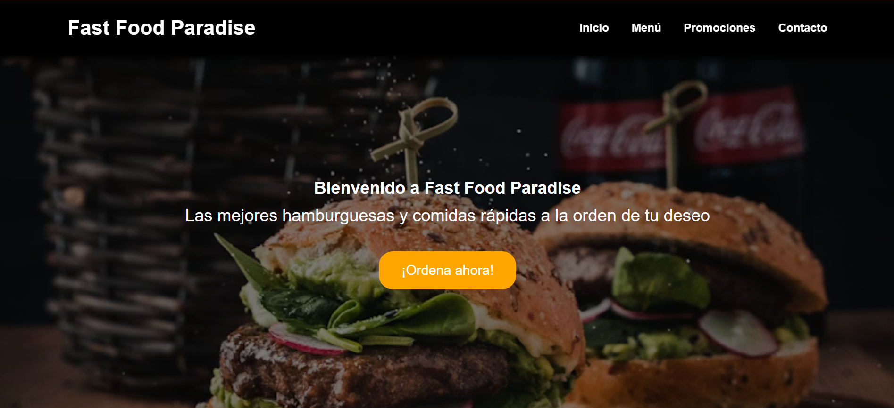
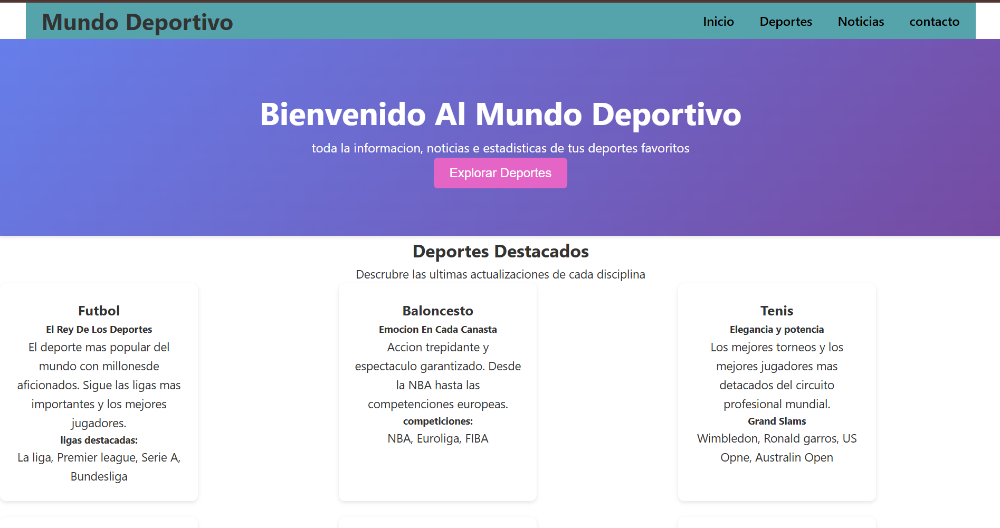
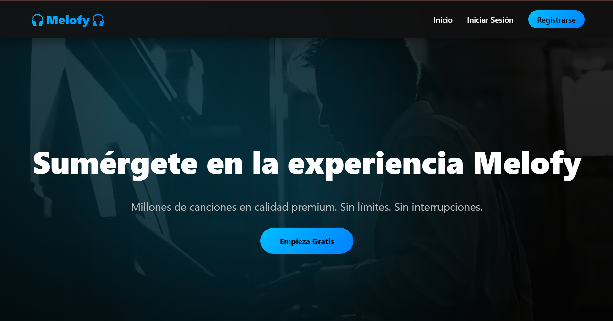

Proyectos desarrollados aplicando desarrollo web, diseño adaptable y buenas prácticas.

Página de comidas rápidas personalizada desarrollada con HTML y CSS.

Página informativa sobre deportes destacados con diseño responsive.

Proyecto desarrollado en equipo utilizando control de versiones y despliegue web.